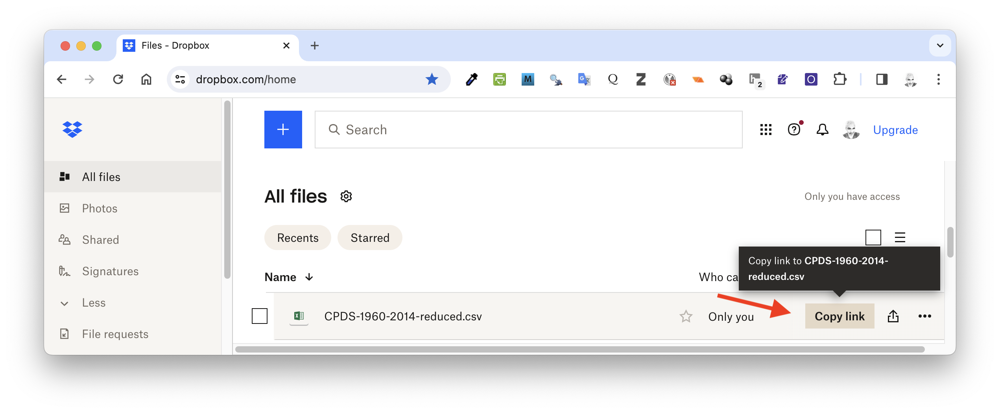
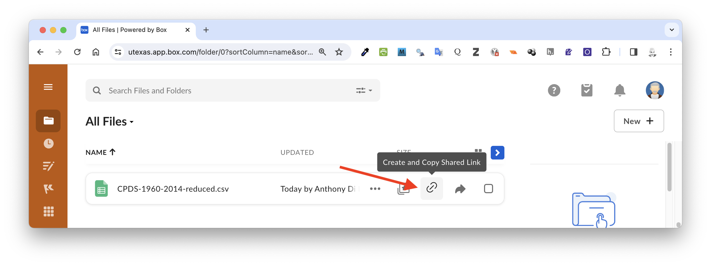

8 Getting Data into R
8.1 Objectives
The objective of this module to learn how to download data sets from various local and online sources.
8.2 Preliminaries
- GO TO: https://github.com/difiore/ada-datasets, download the “.txt” and “.csv” versions of “Country-Data-2016”, and save them locally.
This data set consists of basic statistics (area, current population size, birth rate, death rate, life expectancy, and form of government) for 249 countries taken from WorldData.info that I have combined with data from the International Union for the Conservation of Nature (IUCN)’s Red List Summary Statistics about the number of threatened animal species by country.
- From the same page, download each of the “.txt”, “.csv”, and “.xlsx” versions of “CPDS-1960-2014-reduced”.
These files contain a version of the Comparative Political Data Set (CPDS), which is “a collection of political and institutional country-level data provided by Prof. Dr. Klaus Armingeon and collaborators at the University of Berne. The dataset consists of annual data for 36 democratic countries for the period of 1960 to 2014 or since their transition to democracy” (Armingeon et al. 2016). The full dataset consists of 300 variables, which I have pared down to a smaller set of economical and population size variables.
CITATION: Armingeon K, Isler C, Knöpfel L, Weisstanner D, and Engler S. 2016. Comparative Political Data Set 1960-2014. Bern: Institute of Political Science, University of Berne.
- Install these packages in R: {readxl}, {XLConnect}, {gdata}, {xlsx}, {curl}, {rdrop2}, {repmis}, {googlesheets4}, and {googledrive}
- Load {tidyverse}
NOTE: Some of these packages (e.g., {XLConnect}, {xlsx}) require that your computer has a Java Runtime Environment (JRE) installed. A JRE is a bundle of software contaiing an interpreter and compiler for Java code, which is used to implement some of the functionality in the package. If your computer does not already have a JRE installed, you will need to also install one before being able to use these packages. You can download a JRE from Oracle’s Java website.
8.3 The Tao of Text
So far, we have seen how to create a variety of data structures by hand (e.g., using the c() function), but for larger data sets we will need mechanisms to import data into R. There are many methods for importing tabular data, stored in various formats (like text files, spreadsheets, and databases).
Plain text files are, arguably, the very best way to store data (and scripts and other documents) as they are a standard format that has been around longer than most operating systems and are unlikely to change anytime soon. Some of the benefits of using text files are listed below:
- Plain text does not have a version and does not age.
- Plain text files are platform and software agnostic.
- Plain text files can be opened by a wide variety of programs.
- Plain text can easily be copied and pasted into a wide range of software.
- Plain text files tend to be smaller and quicker to open then proprietary formats.
- Plain text files are easy to transmit over the web.
- Many mature and efficient software tools exist for indexing, parsing, searching, and modifying text.
- The content of plain text files looks the same on any system.
- Various flavors of Markdown can be used for styling plain text files, if needed.
- Plain text remains itself outside of the digital context.
- CAVEAT: With text, we do have to think about the sometimes gnarly issue of text encoding. See this article or this pdf for a nice overview of the issues.
TL/DR: Work with UTF-8 encoding whenever you can!
8.4 Working with Local Files
Setting the Path to a File
The file.choose() command is a useful command for interactive engagement with R. It gives you a familiar operating system-specific dialog box and allows you to select a file. You can use this to specify the path to a locally-stored file. The code below will assign the variable f to the full path to the file you choose.
f <- file.choose()Alternatively, you can directly assign a variable, e.g., f, to be the path to a locally-stored file. The file paths below refer to where I have saved the data files I downloaded - in a folder called data/ within my working directory. You may need to change this path if you have saved downloaded data to a different location on your computer.
Loading Data from Text Files
In R, we can load a data set from a several types of plain text file stored on a local computer using the read.table() function from the {base} package, with the path to the file as the first (file="<path>") argument for the function. An additional argument (header=<boolean>) can be used to specify whether the first row of the data file consists of column/field names.
The generic read.table() function can be used to read data files where columns are separated by tabs, commas, white space, or some other delimiter. The sep= argument tells R what character is used as a delimiter. The skip= argument can be used to start reading a file after a set number of rows.
There are format-specific variants of read.table() (e.g., read.csv()) that have different defaults and may be quicker for certain file types. Note that, as mentioned in Module 07, when using this function from the {base} package, the argument stringsAsFactors= is set to be TRUE by default, and we need to set it as FALSE if we want character strings to be loaded as actual strings.
As an example, we will read in some of the data sets that you have copied and stored locally in the files “CPDS-1960-2014-reduced.csv” and “CPDS-1960-2014-reduced.txt”.
Reading comma-separated (“.csv”) text files with {base} R
f <- "data/CPDS-1960-2014-reduced.csv"
d <- read.table(f, header = TRUE, sep = ",", stringsAsFactors = FALSE)
head(d) # shows the first 6 lines of data## year country gov_right1 gov_cent1 gov_left1 gov_party elect vturn
## 1 1960 Australia 100 0 0 1 95.5
## 2 1961 Australia 100 0 0 1 09/12/1961 95.3
## 3 1962 Australia 100 0 0 1 95.3
## 4 1963 Australia 100 0 0 1 30/11/1963 95.7
## 5 1964 Australia 100 0 0 1 95.7
## 6 1965 Australia 100 0 0 1 95.7
## womenpar realgdpgr inflation debt_hist deficit ttl_labf labfopar unemp
## 1 0 NA 3.73 40.15 0.46 4215.00 NA 1.25
## 2 0 -0.64 2.29 38.62 -0.36 4286.00 NA 2.46
## 3 0 5.77 -0.32 38.75 -0.79 4382.00 NA 2.32
## 4 0 6.01 0.64 37.34 -0.51 4484.00 NA 1.87
## 5 0 6.26 2.87 35.31 -0.08 4610.80 67.24 1.45
## 6 0 4.99 3.41 53.99 -0.73 4745.95 67.66 1.36
## pop pop15_64 pop65 elderly
## 1 10275.0 6296.5 874.9 8.51
## 2 10508.2 6428.6 894.6 8.51
## 3 10700.5 6571.5 913.6 8.54
## 4 10906.9 6710.9 933.0 8.55
## 5 11121.6 6857.3 948.1 8.52
## 6 11340.9 7014.6 966.3 8.52NOTE: You can use a second argument to the
head()function to return a specified number of lines, e.g.,head(d, 10). You can also use bracket notation to display a certain range of lines, e.g.,head(d)[11:20].
Or, alternatively…
d <- read.csv(f, header = TRUE, stringsAsFactors = FALSE)
head(d)## year country gov_right1 gov_cent1 gov_left1 gov_party elect vturn
## 1 1960 Australia 100 0 0 1 95.5
## 2 1961 Australia 100 0 0 1 09/12/1961 95.3
## 3 1962 Australia 100 0 0 1 95.3
## 4 1963 Australia 100 0 0 1 30/11/1963 95.7
## 5 1964 Australia 100 0 0 1 95.7
## 6 1965 Australia 100 0 0 1 95.7
## womenpar realgdpgr inflation debt_hist deficit ttl_labf labfopar unemp
## 1 0 NA 3.73 40.15 0.46 4215.00 NA 1.25
## 2 0 -0.64 2.29 38.62 -0.36 4286.00 NA 2.46
## 3 0 5.77 -0.32 38.75 -0.79 4382.00 NA 2.32
## 4 0 6.01 0.64 37.34 -0.51 4484.00 NA 1.87
## 5 0 6.26 2.87 35.31 -0.08 4610.80 67.24 1.45
## 6 0 4.99 3.41 53.99 -0.73 4745.95 67.66 1.36
## pop pop15_64 pop65 elderly
## 1 10275.0 6296.5 874.9 8.51
## 2 10508.2 6428.6 894.6 8.51
## 3 10700.5 6571.5 913.6 8.54
## 4 10906.9 6710.9 933.0 8.55
## 5 11121.6 6857.3 948.1 8.52
## 6 11340.9 7014.6 966.3 8.52tail(d) # shows the last 6 lines of data## year country gov_right1 gov_cent1 gov_left1 gov_party elect vturn
## 1573 2009 USA 16.36 83.64 0 1 53.2
## 1574 2010 USA 11.76 88.24 0 1 02/11/2010 39.8
## 1575 2011 USA 8.80 91.20 0 1 39.8
## 1576 2012 USA 5.88 94.12 0 1 06/11/2012 50.9
## 1577 2013 USA 5.88 94.12 0 1 50.9
## 1578 2014 USA 8.40 91.60 0 1 04/11/2014 35.6
## womenpar realgdpgr inflation debt_hist deficit ttl_labf labfopar unemp
## 1573 16.8 -2.78 -0.36 93.47 -12.83 155454.0 75.49 9.3
## 1574 16.8 2.53 1.64 102.66 -12.18 155220.3 74.80 9.6
## 1575 16.8 1.60 3.16 108.25 -10.75 154949.3 74.12 8.9
## 1576 18.0 2.22 2.07 111.48 -9.00 156368.6 74.53 8.1
## 1577 17.8 1.49 1.46 111.45 -5.49 156761.2 74.41 7.4
## 1578 19.3 2.43 1.62 111.70 -5.13 157268.8 NA 6.2
## pop pop15_64 pop65 elderly
## 1573 306771.5 206060.8 39623.18 12.92
## 1574 309347.1 207665.3 40479.35 13.09
## 1575 311721.6 209179.2 41366.63 13.27
## 1576 314112.1 209823.0 43164.91 13.74
## 1577 316498.0 210673.5 44723.04 14.13
## 1578 318857.0 211545.9 46243.21 14.50class(d) # shows that tables are typically loaded in as data frames## [1] "data.frame"Reading tab-separated (“.tsv”, “.txt”) text files with {base} R
NOTE: In the following snippet, you can change the
sep=argument as needed to use other delimiters
f <- "data/CPDS-1960-2014-reduced.txt" # specfies a local path
d <- read.table(f, header = TRUE, sep = "\t", stringsAsFactors = FALSE, fill = TRUE)
# if fill is left as the default (FALSE) then this will throw an error... if
# TRUE then if the rows have unequal length, blank fields are implicitly added
head(d) # shows the first 6 lines of data## year country gov_right1 gov_cent1 gov_left1 gov_party elect vturn
## 1 1960 Australia 100 0 0 1 95.5
## 2 1961 Australia 100 0 0 1 09/12/1961 95.3
## 3 1962 Australia 100 0 0 1 95.3
## 4 1963 Australia 100 0 0 1 30/11/1963 95.7
## 5 1964 Australia 100 0 0 1 95.7
## 6 1965 Australia 100 0 0 1 95.7
## womenpar realgdpgr inflation debt_hist deficit ttl_labf labfopar unemp
## 1 0 NA 3.73 40.15 0.46 4215.00 NA 1.25
## 2 0 -0.64 2.29 38.62 -0.36 4286.00 NA 2.46
## 3 0 5.77 -0.32 38.75 -0.79 4382.00 NA 2.32
## 4 0 6.01 0.64 37.34 -0.51 4484.00 NA 1.87
## 5 0 6.26 2.87 35.31 -0.08 4610.80 67.24 1.45
## 6 0 4.99 3.41 53.99 -0.73 4745.95 67.66 1.36
## pop pop15_64 pop65 elderly
## 1 10275.0 6296.5 874.9 8.51
## 2 10508.2 6428.6 894.6 8.51
## 3 10700.5 6571.5 913.6 8.54
## 4 10906.9 6710.9 933.0 8.55
## 5 11121.6 6857.3 948.1 8.52
## 6 11340.9 7014.6 966.3 8.52Or, alternatively…
d <- read.delim(f, header = TRUE, stringsAsFactors = FALSE)
# for the `read.delim()` function, fill=TRUE by default
head(d)## year country gov_right1 gov_cent1 gov_left1 gov_party elect vturn
## 1 1960 Australia 100 0 0 1 95.5
## 2 1961 Australia 100 0 0 1 09/12/1961 95.3
## 3 1962 Australia 100 0 0 1 95.3
## 4 1963 Australia 100 0 0 1 30/11/1963 95.7
## 5 1964 Australia 100 0 0 1 95.7
## 6 1965 Australia 100 0 0 1 95.7
## womenpar realgdpgr inflation debt_hist deficit ttl_labf labfopar unemp
## 1 0 NA 3.73 40.15 0.46 4215.00 NA 1.25
## 2 0 -0.64 2.29 38.62 -0.36 4286.00 NA 2.46
## 3 0 5.77 -0.32 38.75 -0.79 4382.00 NA 2.32
## 4 0 6.01 0.64 37.34 -0.51 4484.00 NA 1.87
## 5 0 6.26 2.87 35.31 -0.08 4610.80 67.24 1.45
## 6 0 4.99 3.41 53.99 -0.73 4745.95 67.66 1.36
## pop pop15_64 pop65 elderly
## 1 10275.0 6296.5 874.9 8.51
## 2 10508.2 6428.6 894.6 8.51
## 3 10700.5 6571.5 913.6 8.54
## 4 10906.9 6710.9 933.0 8.55
## 5 11121.6 6857.3 948.1 8.52
## 6 11340.9 7014.6 966.3 8.52Reading text files with the {readr} package
The {readr} package, which is loaded as part of {tidyverse} provides easy alternative functions to read in delimited text files. It runs faster than the {base} package functions. It begins by reading in an initial set of rows (a default number of 1000) from the table and then tries to impute the data class of each column. If you want, you can also directly specify the data class of each column with the col_types() function. The col_names=<boolean> argument is used to specify if your data has a header row.
NOTE: There are variants of the main
read_<type>()function for different types of files, e.g., tab-separated values (read_tsv()), comma-separated values (read_csv()), those with some other delimiter (read_delim()). A few common delimiters that might be used in text files are commas (,), tabs (\t), semicolons (;), and end-of-line characters, e.g., “new lines” (\n) or “carriage returns” (\r).
f <- "data/CPDS-1960-2014-reduced.txt"
d <- read_tsv(f, col_names = TRUE) # for tab-separated value files
head(d)## # A tibble: 6 × 20
## year country gov_right1 gov_cent1 gov_left1 gov_party elect vturn womenpar
## <dbl> <chr> <dbl> <dbl> <dbl> <dbl> <chr> <dbl> <dbl>
## 1 1960 Australia 100 0 0 1 <NA> 95.5 0
## 2 1961 Australia 100 0 0 1 09/12… 95.3 0
## 3 1962 Australia 100 0 0 1 <NA> 95.3 0
## 4 1963 Australia 100 0 0 1 30/11… 95.7 0
## 5 1964 Australia 100 0 0 1 <NA> 95.7 0
## 6 1965 Australia 100 0 0 1 <NA> 95.7 0
## # ℹ 11 more variables: realgdpgr <dbl>, inflation <dbl>, debt_hist <dbl>,
## # deficit <dbl>, ttl_labf <dbl>, labfopar <dbl>, unemp <dbl>, pop <dbl>,
## # pop15_64 <dbl>, pop65 <dbl>, elderly <dbl>class(d)## [1] "spec_tbl_df" "tbl_df" "tbl" "data.frame"# returns d as a data frame, but also as a 'tibble' note the output is more
# verbose and the problems() function highlights where there might have been
# parsing errorsOr, alternatively…
d <- read_delim(f, delim = "\n", col_names = TRUE)
# for generic delimited files, where the delimiter is a tab ('\t')
head(d)## # A tibble: 6 × 1
## year\tcountry\tgov_right1\tgov_cent1\tgov_left1\tgov_party\telect\tvturn\two…¹
## <chr>
## 1 "1960\tAustralia\t100.00\t0.00\t0.00\t1\t\t95.5\t0.0\t\t3.73\t40.15\t0.46\t42…
## 2 "1961\tAustralia\t100.00\t0.00\t0.00\t1\t09/12/1961\t95.3\t0.0\t-0.64\t2.29\t…
## 3 "1962\tAustralia\t100.00\t0.00\t0.00\t1\t\t95.3\t0.0\t5.77\t-0.32\t38.75\t-0.…
## 4 "1963\tAustralia\t100.00\t0.00\t0.00\t1\t30/11/1963\t95.7\t0.0\t6.01\t0.64\t3…
## 5 "1964\tAustralia\t100.00\t0.00\t0.00\t1\t\t95.7\t0.0\t6.26\t2.87\t35.31\t-0.0…
## 6 "1965\tAustralia\t100.00\t0.00\t0.00\t1\t\t95.7\t0.0\t4.99\t3.41\t53.99\t-0.7…
## # ℹ abbreviated name:
## # ¹`year\tcountry\tgov_right1\tgov_cent1\tgov_left1\tgov_party\telect\tvturn\twomenpar\trealgdpgr\tinflation\tdebt_hist\tdeficit\tttl_labf\tlabfopar\tunemp\tpop\tpop15_64\tpop65\telderly`f <- "data/CPDS-1960-2014-reduced.csv"
d <- read_csv(f, col_names = TRUE) # for comma-separated value files## Rows: 1578 Columns: 20
## ── Column specification ────────────────────────────────────────────────────────
## Delimiter: ","
## chr (2): country, elect
## dbl (18): year, gov_right1, gov_cent1, gov_left1, gov_party, vturn, womenpar...
##
## ℹ Use `spec()` to retrieve the full column specification for this data.
## ℹ Specify the column types or set `show_col_types = FALSE` to quiet this message.head(d)## # A tibble: 6 × 20
## year country gov_right1 gov_cent1 gov_left1 gov_party elect vturn womenpar
## <dbl> <chr> <dbl> <dbl> <dbl> <dbl> <chr> <dbl> <dbl>
## 1 1960 Australia 100 0 0 1 <NA> 95.5 0
## 2 1961 Australia 100 0 0 1 09/12… 95.3 0
## 3 1962 Australia 100 0 0 1 <NA> 95.3 0
## 4 1963 Australia 100 0 0 1 30/11… 95.7 0
## 5 1964 Australia 100 0 0 1 <NA> 95.7 0
## 6 1965 Australia 100 0 0 1 <NA> 95.7 0
## # ℹ 11 more variables: realgdpgr <dbl>, inflation <dbl>, debt_hist <dbl>,
## # deficit <dbl>, ttl_labf <dbl>, labfopar <dbl>, unemp <dbl>, pop <dbl>,
## # pop15_64 <dbl>, pop65 <dbl>, elderly <dbl>Or, alternatively…
d <- read_delim(f, delim = ",", col_names = TRUE)## Rows: 1578 Columns: 20
## ── Column specification ────────────────────────────────────────────────────────
## Delimiter: ","
## chr (2): country, elect
## dbl (18): year, gov_right1, gov_cent1, gov_left1, gov_party, vturn, womenpar...
##
## ℹ Use `spec()` to retrieve the full column specification for this data.
## ℹ Specify the column types or set `show_col_types = FALSE` to quiet this message.# for generic delimited files, where the delimiter is a comma
head(d)## # A tibble: 6 × 20
## year country gov_right1 gov_cent1 gov_left1 gov_party elect vturn womenpar
## <dbl> <chr> <dbl> <dbl> <dbl> <dbl> <chr> <dbl> <dbl>
## 1 1960 Australia 100 0 0 1 <NA> 95.5 0
## 2 1961 Australia 100 0 0 1 09/12… 95.3 0
## 3 1962 Australia 100 0 0 1 <NA> 95.3 0
## 4 1963 Australia 100 0 0 1 30/11… 95.7 0
## 5 1964 Australia 100 0 0 1 <NA> 95.7 0
## 6 1965 Australia 100 0 0 1 <NA> 95.7 0
## # ℹ 11 more variables: realgdpgr <dbl>, inflation <dbl>, debt_hist <dbl>,
## # deficit <dbl>, ttl_labf <dbl>, labfopar <dbl>, unemp <dbl>, pop <dbl>,
## # pop15_64 <dbl>, pop65 <dbl>, elderly <dbl>Loading Data from Excel Files
While you should never need to use Excel, sometimes you will no doubt be given a spreadsheet file with some data in it that you want to read in R. There are several packages available that provide functions for loading data into R from Excel spreadsheet files: {readxl}, {XLConnect}, and {xlsx}. The first two of these are fast, easy to use, and work well. Both require that you have successfully installed {rJava} on your computer, which both packages import as a dependency. Be warned, sometimes installing {rJava} can be tricky! {xlsx} also may be slower than the other methods, but its read.xlsx2() function may improve the speed.
NOTE: You shoud always use
str()to check if your variables come in as the correct data class!
Using the {readxl} package
library(readxl)
f <- "data/CPDS-1960-2014-reduced.xlsx"
d <- read_excel(f, sheet = 1, col_names = TRUE)
head(d)## # A tibble: 6 × 20
## year country gov_right1 gov_cent1 gov_left1 gov_party elect
## <dbl> <chr> <dbl> <dbl> <dbl> <dbl> <dttm>
## 1 1960 Australia 100 0 0 1 NA
## 2 1961 Australia 100 0 0 1 1961-12-09 00:00:00
## 3 1962 Australia 100 0 0 1 NA
## 4 1963 Australia 100 0 0 1 1963-11-30 00:00:00
## 5 1964 Australia 100 0 0 1 NA
## 6 1965 Australia 100 0 0 1 NA
## # ℹ 13 more variables: vturn <dbl>, womenpar <dbl>, realgdpgr <dbl>,
## # inflation <dbl>, debt_hist <dbl>, deficit <dbl>, ttl_labf <dbl>,
## # labfopar <dbl>, unemp <dbl>, pop <dbl>, pop15_64 <dbl>, pop65 <dbl>,
## # elderly <dbl>str(d) # `read_excel()` yields a 'tibble'## tibble [1,578 × 20] (S3: tbl_df/tbl/data.frame)
## $ year : num [1:1578] 1960 1961 1962 1963 1964 ...
## $ country : chr [1:1578] "Australia" "Australia" "Australia" "Australia" ...
## $ gov_right1: num [1:1578] 100 100 100 100 100 100 100 100 100 100 ...
## $ gov_cent1 : num [1:1578] 0 0 0 0 0 0 0 0 0 0 ...
## $ gov_left1 : num [1:1578] 0 0 0 0 0 0 0 0 0 0 ...
## $ gov_party : num [1:1578] 1 1 1 1 1 1 1 1 1 1 ...
## $ elect : POSIXct[1:1578], format: NA "1961-12-09" ...
## $ vturn : num [1:1578] 95.5 95.3 95.3 95.7 95.7 95.7 95.1 95.1 95.1 95 ...
## $ womenpar : num [1:1578] 0 0 0 0 0 0 0.8 0.8 0.8 0 ...
## $ realgdpgr : num [1:1578] NA -0.643 5.767 6.009 6.258 ...
## $ inflation : num [1:1578] 3.729 2.288 -0.319 0.641 2.866 ...
## $ debt_hist : num [1:1578] 40.1 38.6 38.7 37.3 35.3 ...
## $ deficit : num [1:1578] 0.4582 -0.3576 -0.7938 -0.5062 -0.0804 ...
## $ ttl_labf : num [1:1578] 4215 4286 4382 4484 4611 ...
## $ labfopar : num [1:1578] NA NA NA NA 67.2 ...
## $ unemp : num [1:1578] 1.25 2.46 2.32 1.87 1.45 ...
## $ pop : num [1:1578] 10275 10508 10700 10907 11122 ...
## $ pop15_64 : num [1:1578] 6296 6429 6572 6711 6857 ...
## $ pop65 : num [1:1578] 875 895 914 933 948 ...
## $ elderly : num [1:1578] 8.51 8.51 8.54 8.55 8.52 ...detach(package:readxl)Using the {XLConnect} package
library(XLConnect)
f <- "data/CPDS-1960-2014-reduced.xlsx"
d <- readWorksheetFromFile(f, sheet = 1, header = TRUE)
head(d)
str(d)The {XLConnect} package can also write data frames back out to Excel worksheets. If the file does not exist, it is created. If it does exist, data is cleared and overwritten. The second process is MUCH slower. In the following, I have included a conditional statement (if(){}) which will implement the file.remove() command here, if needed.
f <- "output.xlsx"
if (file.exists(f)) {
file.remove(f)
}
writeWorksheetToFile(f, d, sheet = "myData", clearSheets = TRUE)
detach(package:XLConnect)For futher information on using {XLConnect} check out this blog post.
Using the {xlsx} package
library(xlsx)
f <- "data/CPDS-1960-2014-reduced.xlsx"
d <- read.xlsx(f, sheetIndex = 1)
# or pass a named sheet using the argument `sheetIndex=` the function
# `read.xlsx2()` is an updated alternative from the same package and may run
# faster
head(d)
detach(package:xlsx)TL/DR: {readxl} seems to be the best package for reading Excel data, but you might need other packages and functions to write native Excel files (“.xls” or “.xlsx”).
8.5 Working with Remote Files
We can also use R as an interface to work with data and files stored on a server elsewhere on the web, e.g., Dropbox, GitHub, or Google Drive.
To read “.csv” or “.txt” files directly from GitHub, use the {curl} or {readr} packages.
GO TO: https://github.com/difiore/ada-datasets, select the “.csv” version of the “CPDS-1960-2014-reduced” file, then press “RAW” and copy the URL from the address box of your browser window… this is what you need to use as an argument for the functions below (you will repeat this for the “.txt” version later on)
Using the {curl} Package
The {curl} package lets us open connection across the internet to read data from a URL, which we can then couple with one of the {base} read.table() functions.
For a comma-separated value (“.csv”) text file…
library(curl)
f <- curl("https://raw.githubusercontent.com/difiore/ada-datasets/main/CPDS-1960-2014-reduced.csv")
d <- read.csv(f, header = TRUE, sep = ",", stringsAsFactors = FALSE)
head(d)## year country gov_right1 gov_cent1 gov_left1 gov_party elect vturn
## 1 1960 Australia 100 0 0 1 95.5
## 2 1961 Australia 100 0 0 1 09/12/1961 95.3
## 3 1962 Australia 100 0 0 1 95.3
## 4 1963 Australia 100 0 0 1 30/11/1963 95.7
## 5 1964 Australia 100 0 0 1 95.7
## 6 1965 Australia 100 0 0 1 95.7
## womenpar realgdpgr inflation debt_hist deficit ttl_labf labfopar unemp
## 1 0 NA 3.73 40.15 0.46 4215.00 NA 1.25
## 2 0 -0.64 2.29 38.62 -0.36 4286.00 NA 2.46
## 3 0 5.77 -0.32 38.75 -0.79 4382.00 NA 2.32
## 4 0 6.01 0.64 37.34 -0.51 4484.00 NA 1.87
## 5 0 6.26 2.87 35.31 -0.08 4610.80 67.24 1.45
## 6 0 4.99 3.41 53.99 -0.73 4745.95 67.66 1.36
## pop pop15_64 pop65 elderly
## 1 10275.0 6296.5 874.9 8.51
## 2 10508.2 6428.6 894.6 8.51
## 3 10700.5 6571.5 913.6 8.54
## 4 10906.9 6710.9 933.0 8.55
## 5 11121.6 6857.3 948.1 8.52
## 6 11340.9 7014.6 966.3 8.52# returns a data frameFor a tab-delimited (“.tsv” or .”txt”) text file…
f <- curl("https://raw.githubusercontent.com/difiore/ada-datasets/main/CPDS-1960-2014-reduced.txt")
d <- read.table(f, header = TRUE, sep = "\t", stringsAsFactors = FALSE)
head(d)## year country gov_right1 gov_cent1 gov_left1 gov_party elect vturn
## 1 1960 Australia 100 0 0 1 95.5
## 2 1961 Australia 100 0 0 1 09/12/1961 95.3
## 3 1962 Australia 100 0 0 1 95.3
## 4 1963 Australia 100 0 0 1 30/11/1963 95.7
## 5 1964 Australia 100 0 0 1 95.7
## 6 1965 Australia 100 0 0 1 95.7
## womenpar realgdpgr inflation debt_hist deficit ttl_labf labfopar unemp
## 1 0 NA 3.73 40.15 0.46 4215.00 NA 1.25
## 2 0 -0.64 2.29 38.62 -0.36 4286.00 NA 2.46
## 3 0 5.77 -0.32 38.75 -0.79 4382.00 NA 2.32
## 4 0 6.01 0.64 37.34 -0.51 4484.00 NA 1.87
## 5 0 6.26 2.87 35.31 -0.08 4610.80 67.24 1.45
## 6 0 4.99 3.41 53.99 -0.73 4745.95 67.66 1.36
## pop pop15_64 pop65 elderly
## 1 10275.0 6296.5 874.9 8.51
## 2 10508.2 6428.6 894.6 8.51
## 3 10700.5 6571.5 913.6 8.54
## 4 10906.9 6710.9 933.0 8.55
## 5 11121.6 6857.3 948.1 8.52
## 6 11340.9 7014.6 966.3 8.52# returns a data frame
detach(package:curl)Using the {readr} Package
Using {readr}, filenames beginning with “http://”, “https://”, “ftp://”, or “fttps://” can be read without having to set up a curl connection interface.
f <- "https://raw.githubusercontent.com/difiore/ada-datasets/main/CPDS-1960-2014-reduced.csv"
d <- read_csv(f, col_names = TRUE)## Rows: 1578 Columns: 20
## ── Column specification ────────────────────────────────────────────────────────
## Delimiter: ","
## chr (2): country, elect
## dbl (18): year, gov_right1, gov_cent1, gov_left1, gov_party, vturn, womenpar...
##
## ℹ Use `spec()` to retrieve the full column specification for this data.
## ℹ Specify the column types or set `show_col_types = FALSE` to quiet this message.head(d)## # A tibble: 6 × 20
## year country gov_right1 gov_cent1 gov_left1 gov_party elect vturn womenpar
## <dbl> <chr> <dbl> <dbl> <dbl> <dbl> <chr> <dbl> <dbl>
## 1 1960 Australia 100 0 0 1 <NA> 95.5 0
## 2 1961 Australia 100 0 0 1 09/12… 95.3 0
## 3 1962 Australia 100 0 0 1 <NA> 95.3 0
## 4 1963 Australia 100 0 0 1 30/11… 95.7 0
## 5 1964 Australia 100 0 0 1 <NA> 95.7 0
## 6 1965 Australia 100 0 0 1 <NA> 95.7 0
## # ℹ 11 more variables: realgdpgr <dbl>, inflation <dbl>, debt_hist <dbl>,
## # deficit <dbl>, ttl_labf <dbl>, labfopar <dbl>, unemp <dbl>, pop <dbl>,
## # pop15_64 <dbl>, pop65 <dbl>, elderly <dbl># returns a 'tibble', a new version of a data framef <- "https://raw.githubusercontent.com/difiore/ada-datasets/main/CPDS-1960-2014-reduced.txt"
d <- read_tsv(f, col_names = TRUE)## Rows: 1578 Columns: 20
## ── Column specification ────────────────────────────────────────────────────────
## Delimiter: "\t"
## chr (2): country, elect
## dbl (18): year, gov_right1, gov_cent1, gov_left1, gov_party, vturn, womenpar...
##
## ℹ Use `spec()` to retrieve the full column specification for this data.
## ℹ Specify the column types or set `show_col_types = FALSE` to quiet this message.head(d)## # A tibble: 6 × 20
## year country gov_right1 gov_cent1 gov_left1 gov_party elect vturn womenpar
## <dbl> <chr> <dbl> <dbl> <dbl> <dbl> <chr> <dbl> <dbl>
## 1 1960 Australia 100 0 0 1 <NA> 95.5 0
## 2 1961 Australia 100 0 0 1 09/12… 95.3 0
## 3 1962 Australia 100 0 0 1 <NA> 95.3 0
## 4 1963 Australia 100 0 0 1 30/11… 95.7 0
## 5 1964 Australia 100 0 0 1 <NA> 95.7 0
## 6 1965 Australia 100 0 0 1 <NA> 95.7 0
## # ℹ 11 more variables: realgdpgr <dbl>, inflation <dbl>, debt_hist <dbl>,
## # deficit <dbl>, ttl_labf <dbl>, labfopar <dbl>, unemp <dbl>, pop <dbl>,
## # pop15_64 <dbl>, pop65 <dbl>, elderly <dbl># returns a 'tibble', a new version of a data frameAccessing Files on Dropbox
To load data from a “.csv” file located in a personal Dropbox account you can use the {rdrop2} package.
NOTE: The {rdrop2} package has been deprecated because one of the dependencies upon which it relies - {assertive} - and, in turn, many of the dependencies upon which {assertive} relies, have not been maintained for some time. Still, it is possible with some care to install an older versions of {rdrop2} and all of its recursive dependencies from Package Archive Files downloaded from CRAN and thus get it working. It takes some time, but may be worthwhile.
Also note that the following code block cannot be rendered to show you the output because it requires an interactive R environment for
drop_auth(),drop_search(), etc.
library(rdrop2)
drop_auth(new_user = TRUE) # opens a browser dialog box to ask for authorization...
drop_dir() # lists the contents of your dropbox folder
f <- "CPDS-1960-2014-reduced.csv" # name of the file to read from
f <- drop_search(query = f, mode = "filename")
# searches your dropbox directory for file or directory names... this can be
# slow!
filenames <- vector()
for (i in 1:length(f$matches)) {
filenames <- c(filenames, f$matches[[i]]$metadata$path_display)
# this is the location of the results returned above the [[i]] returns each
# encountered file with a matching filename and puts them into a vector
}
d <- drop_read_csv(filenames[1], header = TRUE, sep = ",", stringsAsFactors = FALSE)
# here the [1] reads only the first file from filenames, but this can be
# modified this to read more than one file
detach(package:rdrop2)This same process can be done to load data from other types of delimited files in Dropbox by setting the appropriate sep= argument.
You can also read text files from a Dropbox account (e.g., your own or someone else’s) using a direct link that can be created for any file. To create this link, you will need to choose to share the file (via the dropdown menu activated by clicking the three dots icon to the right of the filename) and then create and copy the direct link to the file.
link <- "https://www.dropbox.com/s/hes2loy1x4tikh9/CPDS-1960-2014-reduced.csv?dl=0"You can read text files from a Dropbox account (e.g., your own or someone else’s) using direct link for the file. To find this link, hover over the filename on Dropbox and then select “Copy link” and grab the direct link to the file.

You can then assign a variable to hold the link, which likely will end in dl=0.
link <- "https://www.dropbox.com/scl/fi/xyhwpfzhdo42mj840pv2e/CPDS-1960-2014-reduced.csv?rlkey=3r4ck0thhgb3p8t3zwmonund5&dl=0"
# NOTE: enter your link between quotation marks in lieu of this dummy link!NOTE: Following a shared Dropbox link like this one will take you to a webpage that has the data embedded… to get R to access the raw data, you will need to change the characters at end of the link from
dl=0todl=1or toraw=1. That is what thegsub()command in the first line of code below does. Then, you can load data from that file withread.csv()orread_csv(). This
link <- gsub(pattern = "dl=0", replacement = "dl=1", x = link)
d <- read.csv(link, header = TRUE, sep = ",", stringsAsFactors = FALSE)
# or, using {tidyverse}, `d <-read_csv(link, col_names = TRUE)`
head(d)
str(d)You can also use the source_data() function from the {repmis} package (“Miscellaneous Tools for Reproducible Research”) to load data from a file on Dropbox. This function detects column types and gives a few more warnings than others if it encounters somthing odd.
library(repmis)
d <- source_data(link, header = TRUE, sep = ",")
# use the same updated link to the raw data as above
head(d)
str(d)Accessing Files on Box
You can load tabular data from Box sites (e.g., UT Box) with {base} R read.table() functions using a direct link that someone has shared with you. To get such a link, hover over the filename on Box and click the link button to “Copy Shared Link”.

In the dialog box that opens, select “Link Settings”…

… and then copy the direct link, which will include the file type extension for the file. It is important to get the direct link to the file rather than just copying the shared link without the file type extension!

You can then assign this link to a variable and read data from it using read.csv() or read_csv().
link <- "https://utexas.box.com/shared/static/gnu54b6qt9e6t1b93ydyevanus7m7frj.csv"
# NOTE: enter the direct link between quotation marks in lieu of this dummy
# link!
d <- read.csv(link, sep = ",", header = TRUE, stringsAsFactors = FALSE)
# or, using {tidyverse}, `d <-read_csv(link, col_names = TRUE)`Or, alternatively, using {repmis}…
d <- source_data(link, header = TRUE, sep = ",")
detach(package:repmis)NOTE: The {boxr} package also provides lots of functionality to interact with files on Box directly, but setup requires an authentication process that I have not yet been able to get working!
Importing Data from Google Sheets
Finally, you can also load data directly from a Google Sheets spreadsheet into R using the {googledrive} and {googlesheets4} packages. Try saving one of the “CPDS-1960-2014-reduced” file as a Google Sheet and then extracting it into R using the code below.
NOTE: The following code block cannot be rendered to show you the output because it requires an interactive R environment for several functions (e.g.,
drive_auth()).
library(googledrive)
library(googlesheets4)
drive_auth() # authenticate access to Google Drive
# usually only needed once opens a web browser and has you sign in
gs4_auth(token = drive_token()) # apply that authentication to Google Sheets
f <- gs4_find() %>%
filter(name == "CPDS-1960-2014-reduced")
# first find all Google Sheets in your drive and then filter for one of
# interest
gs4_get(f)
# get info on the Google Sheets file selected, including the number and names
# of the different worksheets within the spreadsheet
d <- read_sheet(f) # read data from the first sheet in the spreadsheet
detach(package:googlesheets4)
detach(package:googledrive)Follow the links below for more information on the basics of using {googledrive} and {googlesheets4}.
Downloading Remote Files
Dropbox
The {rdrop2} package, if you are able to install it, can also be used to download a file from a personal Dropbox account to your local computer, rather than just connecting to a Dropbox file to read the data stored there. This should work with any file type. The {rdrop2} package may not be available to install via CRAN, so you may need to install the package directly from the developer’s GitHub site https://github.com/karthik/rDrop2. To do so, install the package {devtools} and then run devtools::install_github("karthik/rdrop2")
NOTE: Again, the following code block cannot be rendered to show you the output because it requires an interactive R environment for
drop_search(), etc.
library(rdrop2)
f <- "CPDS-1960-2014-reduced.csv" # name of file to download
f <- drop_search(query = f, mode = "filename")
# searches your dropbox directory for that file or directory name
filenames <- vector()
for (i in 1:length(f$matches)) {
filenames <- c(filenames, f$matches[[i]]$metadata$path_display)
# this is the location of the results returned above the [[i]] returns each
# encountered file with a matching filename and puts them into a vector
}
drop_download(filenames[1], local_path = paste0("data", filenames), overwrite = TRUE,
progress = TRUE)
# here the [1] reads only the first encountered file... this can be modified
# this to read more than one file
# this function will save the file to a folder called 'data' inside the current
# working directoryThe progress=TRUE argument gives you a reassuring progress bar. By default, this argument is set to FALSE.
NOTE: This process also works for other file types, e.g., Excel files:
filename <- "CPDS-1960-2014-reduced.xlsx" # name of file to download
f <- drop_search(filename)
# searches your dropbox directory for that file or directory name
filenames <- vector()
for (i in 1:length(f$matches)) {
filenames <- c(filenames, f$matches[[i]]$metadata$path_display)
# this is the location of the results returned above the [[i]] returns each
# encountered file with a matching filename and puts them into a vector
}
drop_download(filenames[1], local_path = paste0("data", filenames), overwrite = TRUE,
progress = TRUE)
# here the [1] reads only the first file... need to modify this to read more
# than one file
# this will save the file to a folder called 'data' inside the current working
# directory
detach(package:rdrop2)Google Drive
The {googledrive} package allows you to interact with a Google Drive account to search for, download, upload, and manipulate files.
library(googledrive)
f <- "CPDS-1960-2014-reduced.xlsx" # name of the file to download
drive_auth() # authenticate access to Google Drive
# to download the file...
drive_download(f, path = paste0("data/", f), overwrite = TRUE)
# this will save the file to a folder called 'data' inside the current working
# directory
# to search for a file and get info about it
files <- drive_find(pattern = f, n_max = 1)
# this example finds a single file, but this might return a tibble
print(files) # prints a list of files matching the pattern
files$drive_resource # shows metadata about file
id <- files$id # get the Google file id for the file
id
# to remove a file
drive_rm(files)
# to upload a file...
drive_upload(paste0("data/", f), name = "CPDS-1960-2014-reduced.csv", overwrite = TRUE)
detach(package:googledrive)More on the basics of using {googledrive} and its functionality can be found here.
# | include: false
detach(package:tidyverse)Concept Review
- There are lots and lots of ways to get data into R from a variety of sources!
- The
file.choose()command will allow you to browse the directory structure on your local machine - The {readr} and {readxl} packages contain probably the most useful functions for reading in most types of delimited data (“.csv”, “.txt”, “.tsv”, “.xlsx”)
- We can read in or download data from remote sites on the web with {curl} or specific packages designed to work with particular hosting sites (e.g., GitHub, Dropbox, Box, Google Sheets, Google Drive)